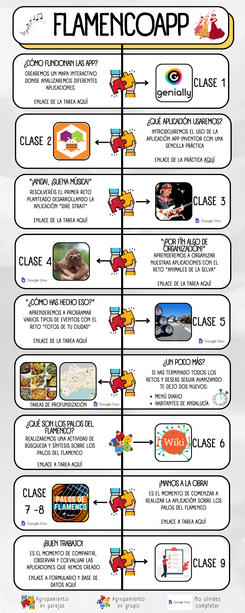

En este apartado te planteo el camino que vamos a seguir mediante una línea temporal presentada en la imagen inferior, como podrás observar el proceso se divide en 9 sesiones diferentes, pero te lo voy a estructurar en 4 bloques para que comiences con una idea general del proceso.
- El primero será un bloque de exploración para conocer las aplicaciones móviles y la herramienta AppInventor que vamos a utilizar.
- En el segundo bloque te propongo diferentes retos con los cuales irás progresando en el diseño y programación de aplicaciones.
- Tras esto es el momento de investigar acerca de los palos del flamenco en el bloque 3.
- Por último pondremos todo en práctica desarrollando la aplicación sobre los palos del flamenco, y compartiremos nuestro proceso publicando nuestro sitio web.
No te pongas nervioso. Precisamente ahora vas a comenzar a ver todo esto en profundidad y cuando acabes serás todo un experto capaz de desarrollar una aplicación móvil completamente funcional.
Y no te olvides de avanzar a tu ritmo, sin prisa, pero sin pausa. ¡Ánimo! tu reto lo vale.
Aquí tienes, por orden, los bloques mencionados y que deberás completar.
- Exploremos este mundo
- Te reto ¿Serás capaz?
- ¡Qué interesante el flamenco!
- Sorprende con FlamecoApp
